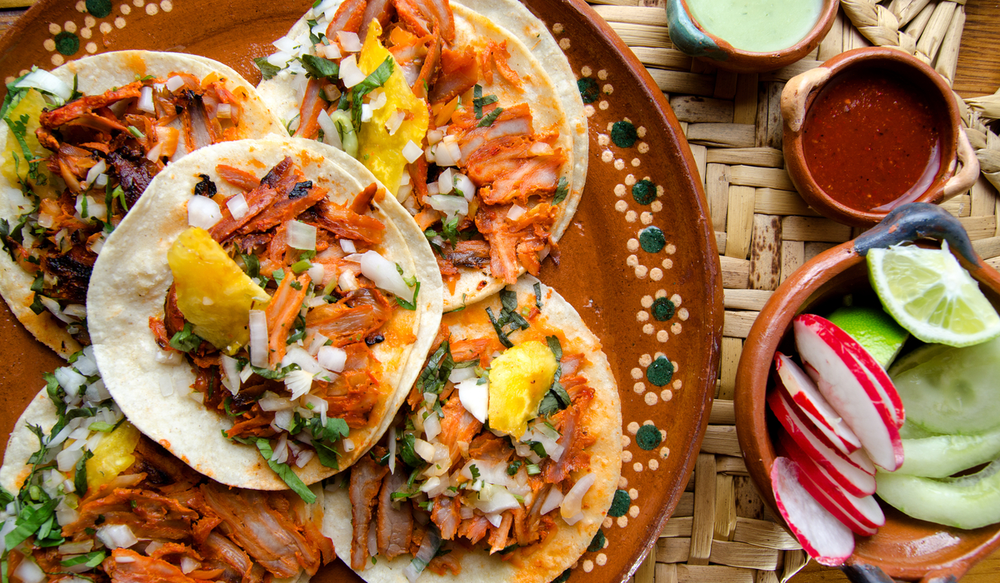
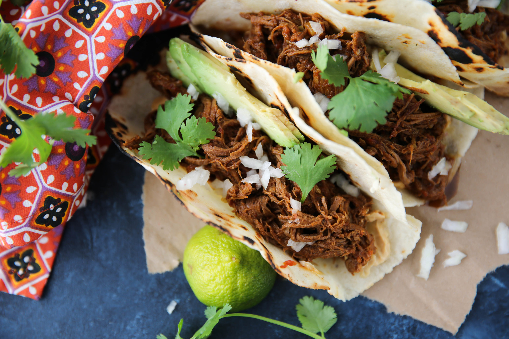
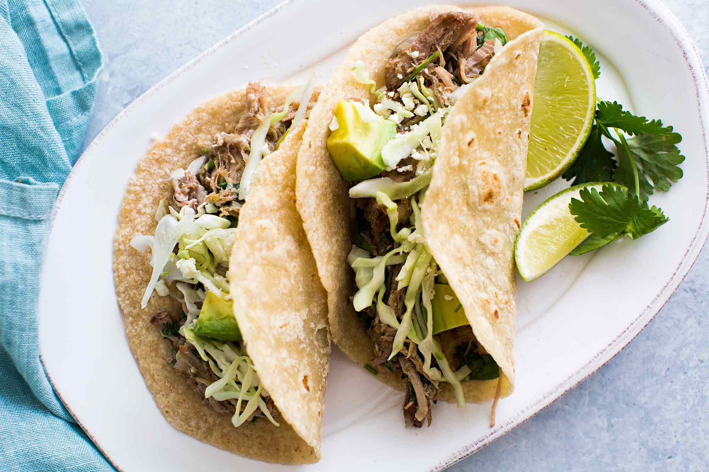

Tacos al pastor were created in the 1930s in Puebla, Mexico, by Lebanese immigrants who introduced the region to classic shawarma: roast lamb served on a flour tortilla or pita bread (pan árabe). This creation was originally known as tacos árabes, and used meat cooked on a vertical, or upright, grill. Today, Tacos Al Pastor are widely popular throughout Mexico as well as other countries, such as the United States.

Barbacoa is believed to have originated centuries ago in Barbados, an island country in the West Antilles of the Caribbean. The word "barbados" is derived from the words "Los Barbadoes" meaning "the bearded ones," a name created by 16th century Portuguese explorers to describe giant bearded fig trees covering many Caribbean islands. The Barbacoa style of cooking was eventually taken to Mexico, where it still refers to meats slow-roasted over an open fire, or more traditionally, in a fire pit covered with succulent leaves of the maguey plant (also known as agave or century plant.)

It is said that pork was introduced in Mexico by the Spanish, and one of the most emblematic dishes that we have in Mexico is called “carnitas,” which originated in the state of Michoacan, but is now prepared in different ways depending on the region of Mexico where you eat them. Carnitas is the name we give to a delicious type of braised or roasted pork dish, usually made with pork shoulder with bone and skin, pork back fat, rib, chuck, lean meat, and thick skin with meat, You can also include for a better flavor: liver, kidneys and other underutilized parts of the animal.